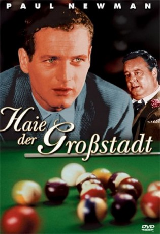

#6237 Haie der Großstadt
Alternativ: The Hustler
Auszeichnungen: 2 Oscars gewonnen für 7 Oscars nominiert 2 BAFTA-Awards gewonnen
 
 IMDB-Wertung: 8.0 / 10
IMDB-Wertung: 8.0 / 10  Metascore: 0
Metascore: 0 
Eddie Felson ist ein zynischer und leidenschaftlicher Billardspieler, der in den Billardhallen der Großstadt unerfahrenen Spielern das Geld abjagt. Doch seine Gedanken kreisen nur um ein Ziel: Er will endlich den Landesmeister Minnesota Fats, besiegen. Ein Match gegen den Profi endete für Eddie einst in einer Katastrophe. Mit Hilfe der Alkoholikerin Sarah und dem Manager Bert Gordon will Eddie noch einmal den Kampf gegen Minnesota aufnehmen, ganz gleich welchen Preis er dafür bezahlen muß.
Jahr: 1961
Dauer: 134 Minuten
FSK: 16
Land: USA Studio: 20th Century FoxTonspuren: DTS - ,
Untertitel: Deutsch,
Auflösung: 1080p (1920x824) Größe: 10076 MB
Genre: Drama, Sport
Regisseur: Robert Rossen
Drehbuch: Céline Sciamma
Soundtrack:
Darsteller:
 Paul Newman als Eddie Felson
Paul Newman als Eddie Felson Jackie Gleason als Minnesota Fats
Jackie Gleason als Minnesota Fats Piper Laurie als Sarah Packard
Piper Laurie als Sarah Packard George C. Scott als Bert Gordon
George C. Scott als Bert Gordon Murray Hamilton als Findley
Murray Hamilton als Findley Michael Constantine als Big John
Michael Constantine als Big John Stefan Gierasch als Preacher
Stefan Gierasch als Preacher- Jake LaMotta als Bartender
 Vincent Gardenia als Bartender
Vincent Gardenia als Bartender Charles Dierkop als Pool Room Hood , uncredited
Charles Dierkop als Pool Room Hood , uncredited- Hoke Howell als Bit Part , uncredited
- Myron McCormick als Charlie Burns
- Clifford A. Pellow als Turk
- Gordon B. Clarke als Cashier
- Alexander Rose als Score Keeper
- Carolyn Coates als Waitress
- Carl York als Young Hustler
- William Adams als Old Doctor , uncredited
- Tom Ahearne als Bartender , uncredited
- Charles Andre als Waiter at Parisien Restaurant , uncredited
- Don Crabtree als Small Role , uncredited
- Gloria Curtis als Girl with Fur Coat , uncredited
- Robert Daget als (uncredited
- Don De Leo als Another Player , uncredited
- William Duell als Billy, Louisville Hustler , uncredited
- James Dukas als Kibitzer , uncredited
- Brendan Fay als Player , uncredited
- Larry Gaynes als Extra in Poolroom , uncredited
- Jack Healy als Hotel Proprietor , uncredited
- Don Koll als Racetrack Ticket Clerk , uncredited
- Charles McDaniel als Reservation Clerk at Louisville Hotel , uncredited
- Charles Mosconi als Second Man , uncredited
- Willie Mosconi als Willie , uncredited
- Sid Raymond als First Man , uncredited
- Art Smith als Old Man Attendant , uncredited
Datei: X:\1961\Haie der Großstadt (1961, FSK16, 1920x824).mkv seit 22.05.2017
Festplatte: HD 1900-1970
 Es gibt insgesamt 22 Filme in der Gruppe '1961'
Es gibt insgesamt 22 Filme in der Gruppe '1961'